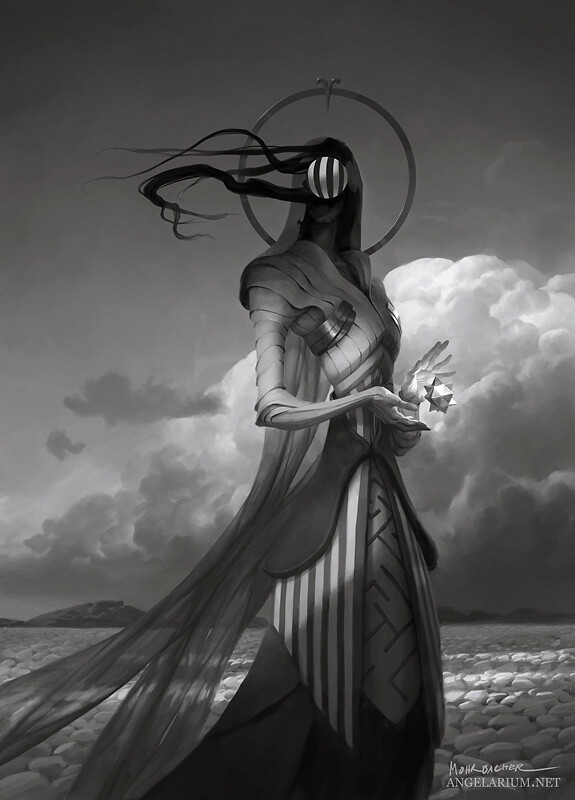

Nimbus Tarot
Printed Media * Packaging * Illustration
Based on the TTRPG setting of the same name. Nimbus Tarot is a complete deck of 22 tarot cards depicting all the major arcana representing the symbology of the D&D world.
See More ↳
Based on the TTRPG setting of the same name. Nimbus Tarot is a complete deck of 22 tarot cards depicting all the major arcana representing the symbology of the D&D world.
See More ↳
Minimalistic poster style and composition collection based on a series of award-winning international movies.
See More ↳.webp)
Personal exercise and exploration of different business card styles and compositions. As a challenge, a limited number of hours were given for 3 days. Giving the following results of various artistic currents.
See More ↳
A special collaboration with the composer and musician Thunderdrop. A collection of different soundtracks showing his versatility and style throughout different genres. As such, a design for the entire album (CD, interiors, exteriors and booklet) was needed, showcasing this clash.
See More ↳
Nimbus Bestiarius is a mythological book, consisting on fragments of the original myths of the gods of Nimbus, a fictional world and D&D setting for a personal home game.
See More ↳As a freelance project I was contacted to create a motion graphics lyric video for a cover of the song “POP/STARS“ by K/DA, performed by the singer RAIN
See More ↳
Personal challenge consiting on the redesign of all Radiohead albums, using elements inspired by their original covers and music
See More ↳